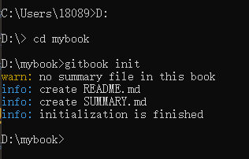
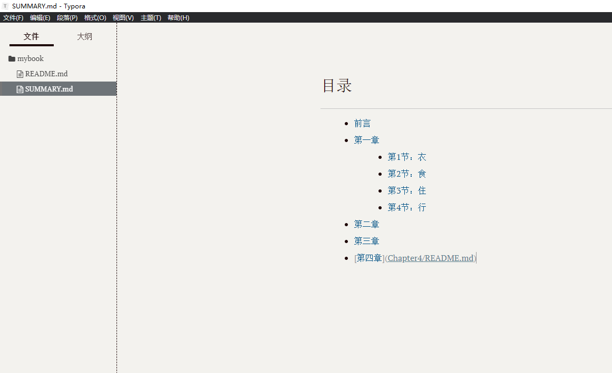
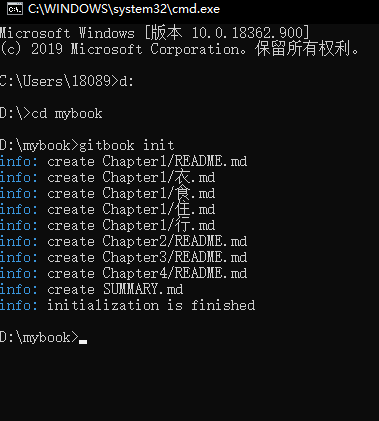
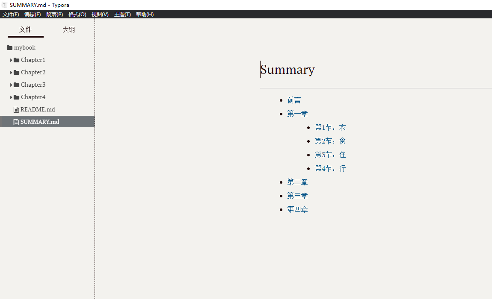
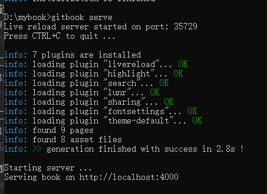

2.2 初始化GitBook
1. 在D:\下创建一个mybook文件夹
2. 点击开始—>运行—>输入cmd,或者Win+R输出cmd
3. 输入d:,在输入如cd mybook,现在进入到D:\mybook目录下
4. 输入gitbook init初始化
图：

2.3 往 SUMMARY.md 文件添加内容
小编使用Typora编辑器来编辑的，可以使用Notepad++，Markdown 等编辑器来编辑。 打开并编辑 SUMMARY.md 文件，内容修改为：
//SUMMARY.md 文件
# 目录
* [前言](README.md)
* [第一章](Chapter1/README.md)
* [第1节：衣](Chapter1/衣.md)
* [第2节：食](Chapter1/食.md)
* [第3节：住](Chapter1/住.md)
* [第4节：行](Chapter1/行.md)
* [第二章](Chapter2/README.md)
* [第三章](Chapter3/README.md)
* [第四章](Chapter4/README.md)
图： 
然后我们回到命令行，在mybook文件夹中再次执行gitbook init命令。GitBook 会查找 SUMMARY.md 文件中描述的目录和文件，如果没有则会将其创建。
图：  Typora 是所见即所得（实时渲染）的 Markdown 编辑器，这时候它是这样的： 
接着我们执行gitbook serve来预览这本书籍，执行命令后会对 Markdown 格式的文档进行转换，默认转换为 html 格式，最后提示 “Serving book on http://localhost:4000”。嗯，打开浏览器看一下吧：
图：

当你写得差不多，你可以执行gitbook build命令构建书籍，默认将生成的静态网站输出到 _book 目录。实际上，这一步也包含在 gitbook serve 里面，因为它们是 HTML，所以 GitBook 通过 Node.js 给你提供服务了。
2.4 输出的_book中的html侧栏无法转跳
- 在导出的文件夹目录下找到gitbook->theme.js文件
- 找到下面的代码（搜索
if(m)for(n.handler&&） - 将
if(m)改成if(false)if(false)for(n.handler&&(i=n,n=i.handler,o=i.selector),o&&de.find.matchesSelector(Ye,o),n.guid||(n.guid=de.guid++),(u=m.events)||(u=m.events={}),(a=m.handle)||(a=m.handle=function(t){return"undefined"!=typeof de&&de.event.triggered!==t.type?de.event.dispatch.apply(e,arguments):void 0}),t=(t||"").match(qe)||[""],l=t.length;l--;)s=Ze.exec(t[l])||[],h=g=s[1],d=(s[2]||"").split(".").sort(),h&&(f=de.event.special[h]||{},h=(o?f.delegateType:f.bindType)||h,f=de.event.special[h]||{},c=de.extend({type:h,origType:g,data:r,handler:n,guid:n.guid,selector:o,needsContext:o&&de.expr.match.needsContext.test(o),namespace:d.join(".")},i),(p=u[h])||(p=u[h]=[],p.delegateCount=0,f.setup&&f.setup.call(e,r,d,a)!==!1||e.addEventListener&&e.addEventListener(h,a)),f.add&&(f.add.call(e,c),c.handler.guid||(c.handler.guid=n.guid)),o?p.splice(p.delegateCount++,0,c):p.push(c),de.event.global[h]=!0)} - 再重新打开index就可以了
2.5 插入标题的方法
[]中是显示的文字信息，()中是链接。后面再跟上#，#后面的内容就是锚点，可以跳转到页面上某一个位子，不过我测试的时候有一些bug，比如，同一个页面有两个锚点，但是只能跳转一次。
也可以用/来分隔目录，如果有多级目录的话可以通过[文件1](a/b/1.md)这样来指定
typora显示结果，其实就是无序列表
Tips:GitBook常用命令
gitbook -V 查看版本号
gitbook init 初始化
gitbook serve 预览
gitbook build 生成
gitbook build --gitbook=2.6.7 生成时指定gitbook的版本, 本地没有会先下载
gitbook uninstall 2.6.7 卸载指定版本号的gitbook
gitbook fetch [version] 获取[版本]下载并安装<版本>
gitbook --help 显示帮助文档
gitbook ls-remote 列出NPM上的可用版本：